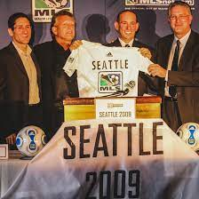

Seattle has always been a city with many soccer supporters. They would always show up to their games during the NASL and USL games. So during the talks for the first teams of this new Major League Soccer league, Seattle was always in consideration. However, MLS wanted a very important thing that the Sounders did not have at the time, a soccer-specific stadium. So they were passed over in 1994, 1996, 2004, and 2006. It was not until 2007 when Paul Allen, Adrian Hanauer, Joe Roth, and Drew Carey made a successful bid to grant the city an MLS franchise.
